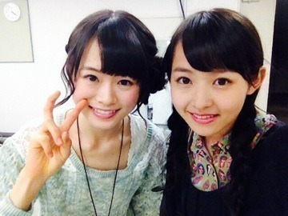

| 2013/10 23 Wed | 赤チェックの脚。508 回目 |

ねねの素の表情ー

前回のブログの
最後に違和感があった。
真夏です！完全に真夏です！
まなったんが書くと
私の最初の文が消えそうなくらいの
威力がある...ひええ
たまにはああって遊ぶのも楽しい。
まなったん♪
絶賛テスト勉強中ですが
休憩にブログ更新

10月21日
めざまし LIVE ISLAND TOUR
2013 in 大阪
Zepp Namba
全国ツアーのときおじゃましました。
その時は台があったりしてたけど、
めざましライブはなかったので
すごく広く感じました。
のびのーび歌って踊れました。
熱かったー
2階席のみなさんにも
ばっちり見えたよね。
やっぱりライブ楽しい！
だいすき！
代々木に続いてオリジナルメンバーで
歌えることが多かったので嬉しかった！
コウモリよは踊れなかったけど、
指望遠鏡でれなポジでしたよ

衣装は全部制服というかたちで。
私はセーラー服いちばんすきです！
王道のセーラー服。
途中めざましじゃんけんやったり
最後はくす玉割って、
東京オリンピック開催お祝いしたり
すごい楽しかったです♪
軽部さん、三田さんにも会えて
嬉しかったーーー
まためざましライブ出たい！
来てくださったみなさん
ありがとうございました！！
10月22日
ファースト写真集『乃木坂派』
ナタリーさんに
写真集について特集がっ
2日目についてお話ししました。
オフショット載ってるよー
見たらみーんな
乃木坂派になっちゃうなー
困ったなー

ひょーーーーーってなるなー
お渡し会楽しみねっ
真夏と真洋と万理華の3人です。
まままー

れなちのピースがへなちょこなのは
御存知でしょうか。
まりか
コメント(381)
2013/10/23 20:06